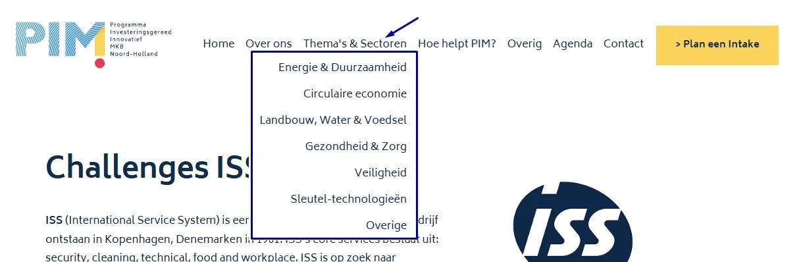
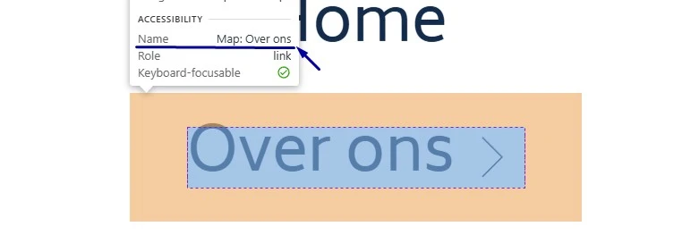
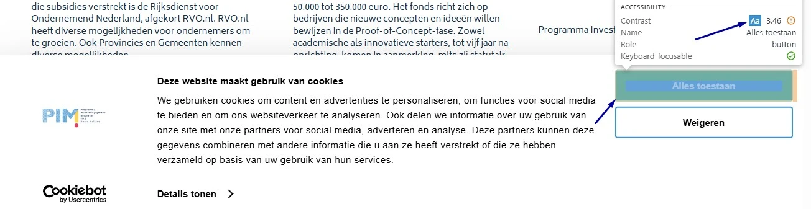
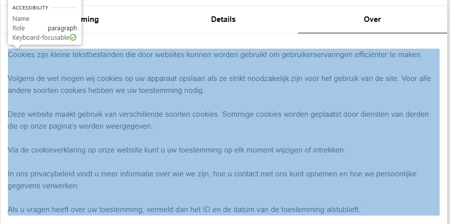
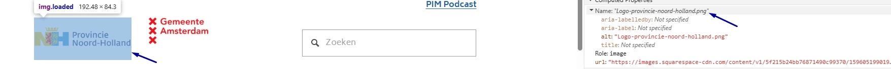
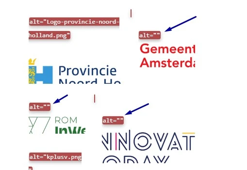
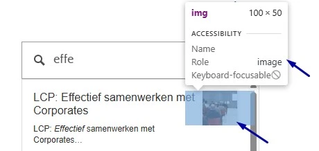

Link naar pagina: https://www.pimnh.nl/
#5 - Content die verschijnt bij hover moet makkelijk gesloten kunnen worden

Wanneer je met de muis over de knoppen "Over ons", "Thema's & Sectoren" en "Hoe helpt PIM?" in de header beweegt, verschijnt extra inhoud die de bestaande inhoud van de pagina overlapt.
Oplossing
De bezoeker moet deze inhoud kunnen sluiten zonder de muis of de toetsenbordfocus te verplaatsen, bijvoorbeeld met de Escape-toets. Zo kan de bezoeker de extra informatie snel verbergen en verdergaan met de rest van de pagina.
#6 - Submenulinks zijn in de code niet gegroepeerd
In de header openen de knoppen "Over ons", "Thema's & Sectoren" en "Hoe helpt PIM?" submenu's met links. Deze links staan visueel als een groep bij elkaar, maar die groepering ontbreekt in de HTML-structuur. Als het voor een ziende bezoeker duidelijk is dat een groep links bij elkaar hoort, dan moet die structuur ook in de code staan.
Oplossing
Neem de links op in een ul-element, met elke link in een eigen li-element.
#7 - De namen van links zijn onduidelijk

Op een klein scherm opent de knop met twee horizontale lijnen een navigatiemenu. In dit menu staan links, zoals "Over ons", die submenu's openen. De toegankelijke naam van deze links bevat het woord "Map", bijvoorbeeld "Map: Over ons". Een schermlezer leest dat voor, en een blinde bezoeker weet daardoor niet wat de link precies doet.
Oplossing
De bedoeling is goed: je wilt aangeven dat er een submenu is. Het woord "Map" op deze plek maakt dat niet duidelijker.
Verplaats het span-element met dit woord naar de laatste positie binnen de link, onder het element met de tekst "Over ons", en verander de tekst in " Open submenu". Let op de spatie voor "Open".
<a href="/over-ons-1">
<span class="header-nav-folder-title-text">Over ons</span>
<span class="visually-hidden"> Open submenu</span>
</a>#8 - Onzichtbaar element krijgt toetsenbordfocus
Op een klein scherm opent de knop met twee horizontale lijnen een navigatiemenu. In dit menu komt de toetsenbordfocus na de link "Plan een Intake" op onzichtbare elementen terecht. Deze elementen horen geen focus te krijgen en verstoren de logische focusvolgorde. Dit is een probleem voor bezoekers die met de Tab-toets navigeren.
Oplossing
Zorg dat alleen elementen die zichtbaar en interactief zijn toetsenbordfocus kunnen krijgen, en dat de focusvolgorde logisch is.
#9 - Kleurcontrast van tekst is te laag

Op alle pagina's staat in de cookiebanner de knop "Alles toestaan", met witte tekst op een blauwe achtergrond (#1B92D0). De contrastratio tussen deze kleuren is 3,5:1. Dat is lager dan de vereiste minimumwaarde van 4,5:1 voor standaardtekst.
Oplossing
Deze tekst is kleiner dan 24px en niet vetgedrukt, daarom moet het contrast minimaal 4,5:1 zijn. Op deze pagina staat een instructie die uitlegt hoe je kleurcontrast kunt testen: https://properaccess.nl/hoe-test-ik-kleurcontrast/.
#10 - Informatiestructuur in de cookiebanner komt niet overeen met HTML

In het dialoogvenster voor cookievoorkeuren, dat opent via de knop "Details tonen" in de cookiebanner, staan de tabbladen "Toestemming", "Details" en "Over". Op het tabblad "Over" staan zes alinea's tekst. Al deze alinea's staan in één div-element, en de regeleinden zijn gemaakt met br-elementen in plaats van met alinea-elementen.
Oplossing
Plaats elke alinea in een eigen p-element. Het aantal alinea's dat je ziet, moet gelijk zijn aan het aantal p-elementen in de code.
#20 - Alternatieve tekst van informatieve afbeelding is niet betekenisvol

Onderaan alle pagina's staan logo's. Het logo met de tekst "Provincie Noord-Holland" heeft als alt-tekst "Logo-provincie-noord-holland.png". Het logo met de tekst "kplusv" heeft als alt-tekst "kplusv.png".
Deze alternatieve teksten zijn bestandsnamen met een extensie (".png"). Een bestandsnaam beschrijft niet wat er op de afbeelding staat en is daarom geen bruikbaar tekstalternatief voor bezoekers met een schermlezer.
Oplossing
Verander de alt-tekst zodat die de volledige tekst of naam bevat die in het logo staat: "Provincie Noord-Holland" en "kplusv".
#21 - Logo is een link, maar bestemming is onbekend

Onderaan alle pagina's staan logo's. De logo's met de teksten "Innovate today" en "Rabobank" hebben geen tekstalternatief.
Omdat deze logo's ook links zijn, missen deze links een toegankelijke naam en is er geen beschrijving van de bestemming van de link. Bezoekers die hulpsoftware gebruiken kunnen daardoor niet bepalen naar welke pagina de link leidt. Dit voldoet niet aan de succescriteria 2.4.4 en 4.1.2.
Omdat de toegankelijke naam van de links de zichtbare tekst in de logo's niet bevat, werkt de link ook niet goed met spraakbediening. De bezoeker spreekt dan de tekst uit die in het logo te zien is. Als de toegankelijke naam daarvan afwijkt, herkent het systeem de link niet.
De logo's met de teksten "Gemeente Amsterdam" en "Preneurz Amsterdam" hebben ook geen tekstalternatief: het alt-attribuut is leeg. Hetzelfde probleem komt voor op de pagina https://www.pimnh.nl/events/plc-samenwerken-met-corporates-2025, bij de logo's onder de koppen "Partners van PIM LCP" en "Challenges 2025".
Oplossing
Pas een van deze opties toe om de link meer context te geven:
alt-tekst: als het logo een afbeelding is, voeg dan eenalt-tekst toe die de bestemming van de link beschrijft.aria-label: voeg eenaria-label-attribuut toe aan heta-element met een beschrijving van de bestemming.- Tekst die met CSS verborgen is. Bezoekers met een schermlezer horen deze tekst, maar op de website verandert er visueel niets.
Zorg dat de tekst die in het logo zichtbaar is in de toegankelijke naam voorkomt, het liefst vooraan. Nog beter is een toegankelijke naam die gelijk is aan de zichtbare tekst.
#Nieuw-1 - Het is niet in de code gedefinieerd dat de zoeksuggesties bij elkaar horenNieuw
Nieuwe bevinding als gevolg van het oplossen van een bevinding uit de vorige audit:
Het zoekveld toont een lijst met suggesties. Deze suggesties staan visueel als een groep bij elkaar, maar die groepering ontbreekt in de HTML-structuur. Als elementen visueel een groep vormen, moet die relatie ook in de code staan. Anders begrijpen bezoekers met hulpsoftware, zoals een schermlezer, niet dat de suggesties bij elkaar horen.
Oplossing
Neem de suggesties op in een ul- of ol-element, met elke suggestie in een eigen li-element. Zo geeft de code de groep door aan hulpsoftware.
#Nieuw-2 - Statusbericht wordt niet voorgelezenNieuw
Nieuwe bevinding als gevolg van het oplossen van een bevinding uit de vorige audit:
Als een zoekopdracht niets oplevert, toont het zoekveld de melding "Geen resultaten gevonden". Dit is een statusbericht. Een schermlezer leest deze melding niet automatisch voor. Statusberichten moeten automatisch worden voorgelezen zodra ze verschijnen of veranderen. De code die dat mogelijk maakt, ontbreekt.
Oplossing
Voeg role="status" toe aan het element met de melding.
#Nieuw-3 - Afbeelding heeft geen tekstalternatief: het alt-attribuut ontbreektNieuw

Nieuwe bevinding als gevolg van het oplossen van een bevinding uit de vorige audit:
Op alle pagina's verschijnt een lijst met suggesties zodra je iets in het zoekveld typt. De afbeeldingen in deze lijst hebben geen alt-attribuut. Zonder alt-attribuut weet een schermlezer niet of de afbeelding betekenis heeft. De bezoeker hoort dan iets dat niets zegt, in plaats van nuttige informatie.
Oplossing
Voeg een alt-attribuut toe aan het img-element. Deze afbeeldingen zijn decoratief, dus het alt-attribuut moet aanwezig zijn maar leeg blijven: alt="".